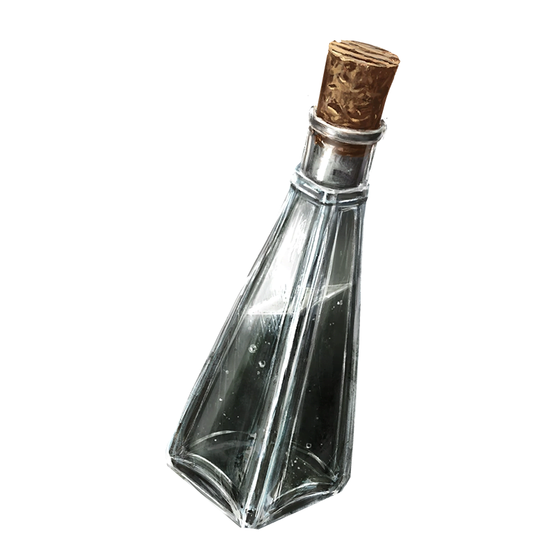
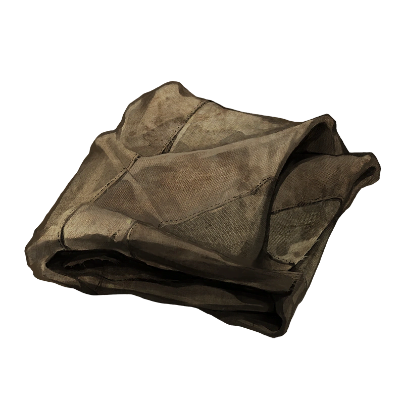
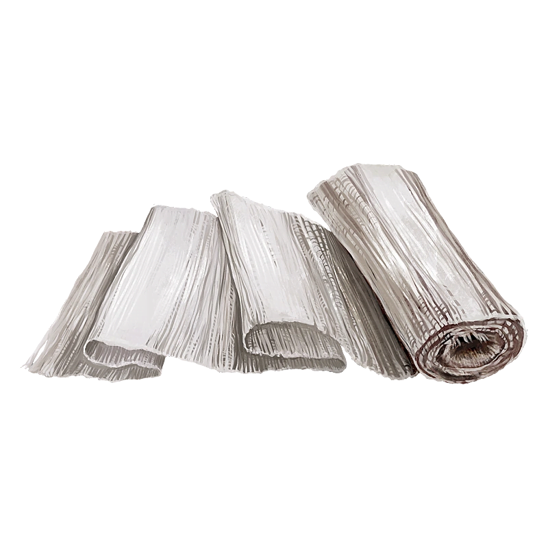
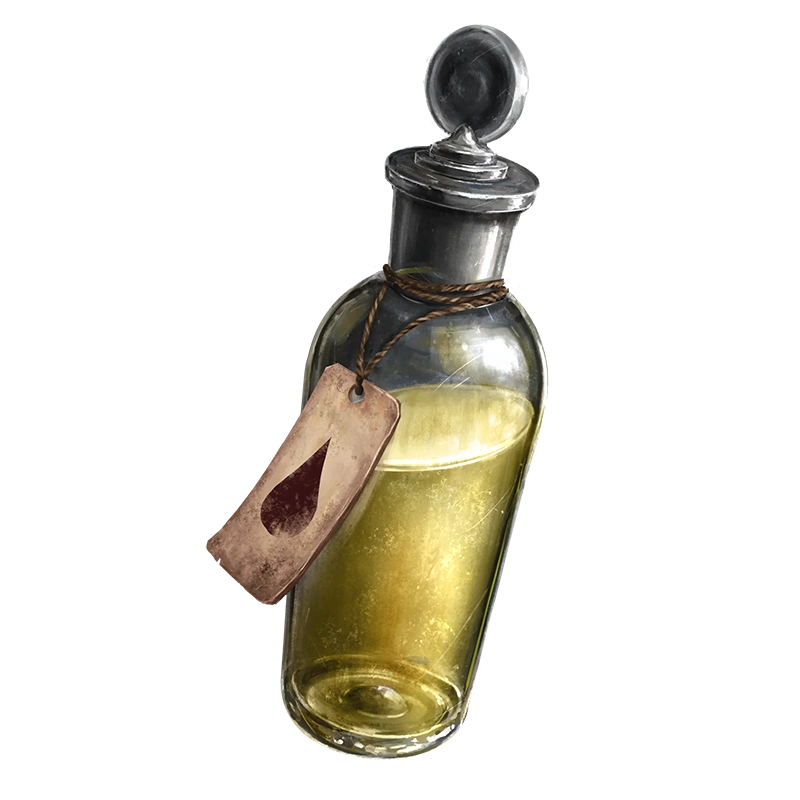
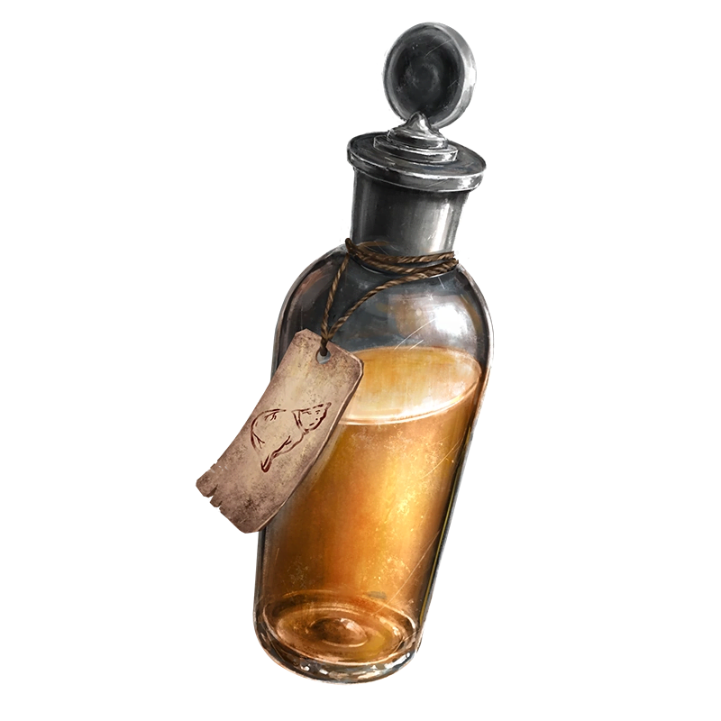
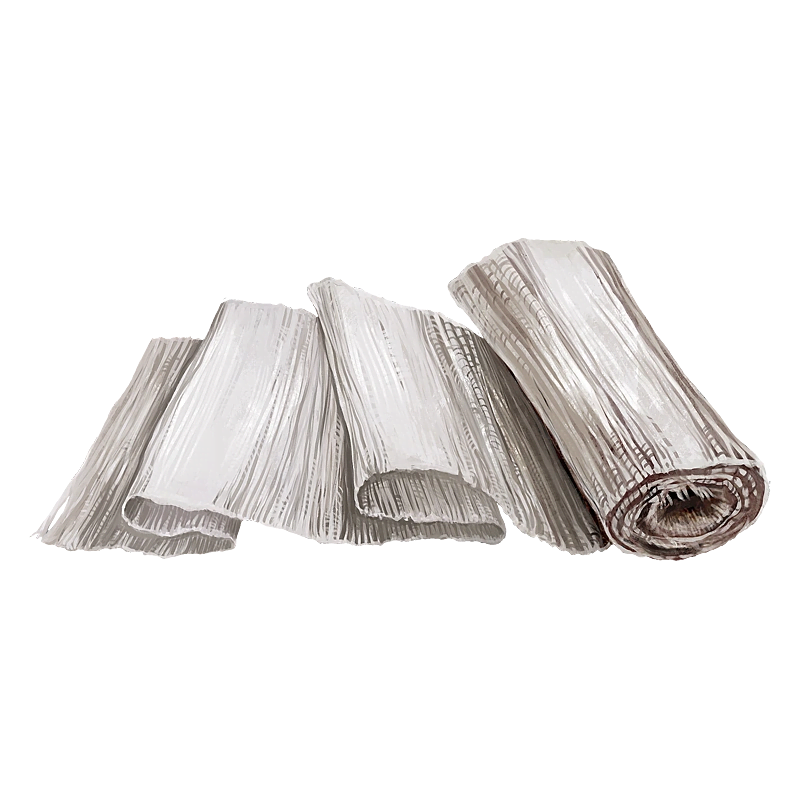
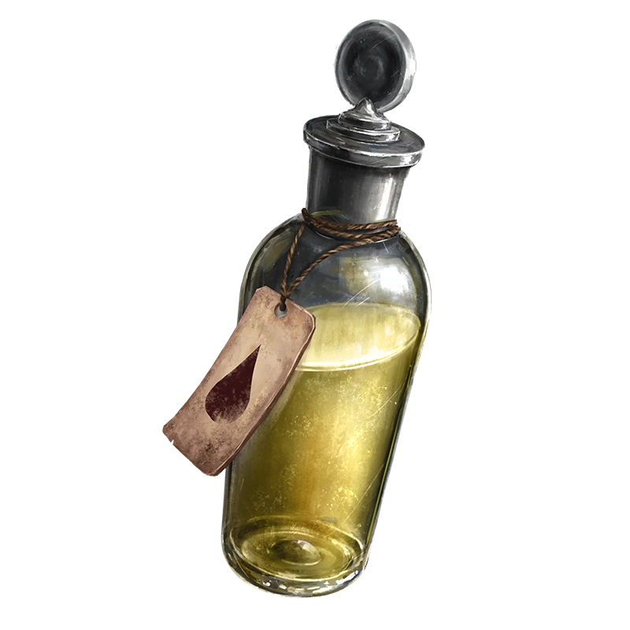
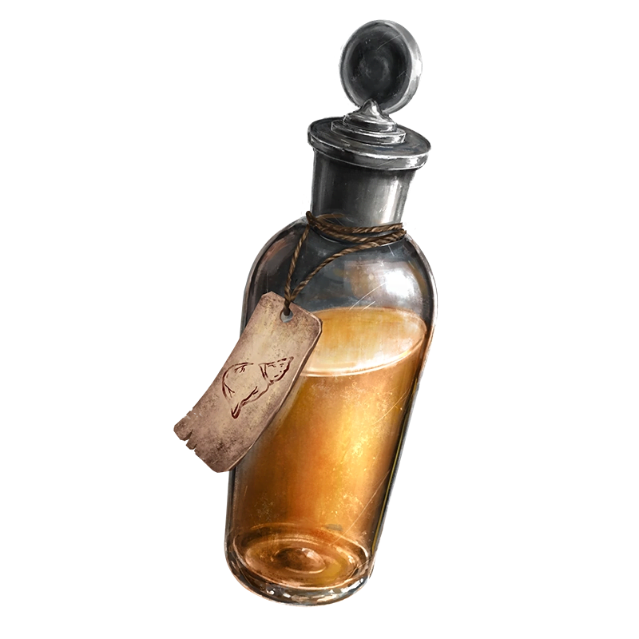

Mura
Plot Significance
- Artemy can meet Mura early on in the clothes shop in the Gut. Otherwise, he's suggested to go visit them on Day 3 by the Bachelor, who has already met them. They apparently have the lowest prices in town when it comes to clothes.
- On Day 2, if Artemy has met Mura, they will mention having a lot of "spare things I don't need" and will trade items other than clothes. If Artemy does not meet them before Day 3, he begins trading things other than clothes on Day 4 when he moves to the Shady Shop. He is one room away from the main shopkeeper there.
- Any day the Warehouses are infected, there is a 30% chance Mura won't be in the shop and instead wandering aimlessly around the area. If Artemy speaks to them, he will scold them and send them back to their shop. If he doesn't send them back, their immunity meter will be lower than usual due to their exposure to the plague miasma.
- Artemy can visit Mura at night to share his findings with them. Mura will attempt to give their input on his next move when asked, but their advice is rarely fruitful and usually will just end up wasting Artemy's time if he follows it. On Day 6, Artemy can confront him about it, and Mura will say he is "more of a listener than a helper."
- If Peter gets infected, Mura can be found inside his home sitting on a wooden chair, their idle animation showing them nodding off. They can't be spoken to normally, but will still be open to trade.
- If Kostya dies, Mura will confront Artemy about it at some point during the day, mentioning that his trust in Artemy was broken and how lost he feels. During the midnight diceroll, Mura will be marked as dead.
- On the day several members of the Kin are asking Artemy for his help outside the lair, Mura will be standing by the Wonder Bull. Mura will ask him to "do a special treatment" for him someday when Artemy starts to better understand the lines. Artemy will say that he already went to medical school, and that it shouldn't be too out of his realm of expertise. Mura will agree but still insists that they will bring it up again when the time is right.
- Mura replaces the man who plays Victoria's Song on the piano in the abandoned house. They claim to love the song, but also admit that they don't really know how to play piano.
- By Days 7 and 9, Mura will be somewhere around the Haruspex's Lair (usually near the Wonder Bull) and will offer to repair Artemy's clothes if he has the right materials.
- On Day 8, Mura will be in the Cathedral sitting with Bad Grief. Artemy can ask them about what Grief was talking about and he will say that Aglaya told him the same thing, "but unlike Grief, it doesn't bother me." Mura will also mention being worried about getting arrested, and Artemy will reassure them that they'll be fine.
- On Day 12 of the Diurnal ending, Mura will be sitting on the swingset by the Cathedral. They will ask Artemy if he's going to stay in town, because they would miss him if he left. They also mention the “special treatment” again.
- On Day 12 of the Nocturnal ending, Mura will be sitting in front of Grief’s hideout with his arms wrapped around his knees and head down. Mura will ask where everyone is and why the plague didn’t take them already. Artemy can assure them that they’ll be okay or tell them about the future. Mura will end the conversation with silence.
Gives:  |
Takes: 





|
Friends:
|
Enemies:
|
Voice Lines
- I’m just a few scraps of fabric sewn together with fishing line. It gets the job done.
- Oh no... I think my seams are exposed.
- Do you always walk around covered in blood? You need another change of clothes, that's for sure...
- I know the Lines too, Haruspex. I know how to join things.
- One knot for yourself, two knots for another. Three knots for harmony, four knots for security.
- Want to hear a joke? ...Too bad, I don't remember any good ones.
- I wonder how my parents are doing.
- Looly-looly-loolenki.. There come my little doves. There they sit at your head. Wee-wee sleep, my little lad...
- I have a splitting headache...
- My head hurts... come talk to me later.
- I didn't sleep very well.
- Just let me sit down for a moment...
- Huuuuuh...?
- What..?
- Hm?
- [humming the beginning part to waltz no. 2 by dmitri shostakovich, just a bit off-key though]
- Shall I sing a song for you?
- Souls of a feather flock together.
- So much screaming by the Termitary... Have you checked up on your Kinfolk lately, Steppe man?
- Is working behind the scenes considered an act of betrayal?
- No, they wouldn't really shell the town, heh... would they?
- My path was called Restlessness. I don't know if I really had any goals in the end. All I really wanted to do was help people, in my own little way. I mean, I think...
Trivia
- Mura uses a homemade hair custard made from boiled river water, White Whip gel, and wax. Their poor health makes it hard for them to collect the White Whip themselves, so they usually get it from Andrey. They're surprised to find out that White Whip has an actual use in tinctures.
- Mura assists all the different healers and tends to give all of them special treatment. They are generally up-to-date on what each healer may be doing, so they can give additional insight on why each healer may be doing this or that. They have a particular fondness for Artemy and can be found more often around places he’s likely to be around.
- In any other route where Kostya dies, Mura won’t be marked dead, but will be missing from the game going forward. On Day 12, he will be sitting outside Artemy’s lair with his face hidden in his arms. His only dialogue will be “Don’t talk to me. You killed my friend.”
- Mura's weapons of choice are their abnormally sharp, wooden knitting needles, which function like slightly weaker knives. They tend to injure themselves with their needles alot, so their hands are covered in bandages most of the time.
- Artemy can make a comment about Mura's clothing choice despite being a tailor, to which Mura replies that they only wear clothes they feel comfortable in, not that they'd necessarily look good in.
- Mura doesn't take very good care of himself because of how absorbed he can get in his work. They are constantly fatigued and get frequent headaches, and they sell their food/water because he knows he probably won't use it himself anyway.
- Mura has two reflections that sit on the rock structures in the Steppe. They’re too high up to be interacted with in normal gameplay.
- Mura actually really likes Rubin. It's Rubin that doesn't like them.


{kind=link}
{kind=link}